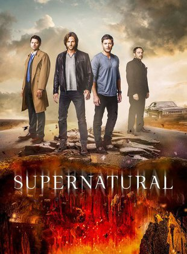

Supernatural is a television series on the TV channel The CW that is currently in its 12th season. It follows to brothers, Sam and Dean Winchester, as they hunt down supernatural creatures and save the world, all while rocking flannel t-shirts and jeans and driving the most amazing car ever, a '67 Chevy Impala named Baby. The show's other main characters include the angel Castiel, a demon named Crowley, who is the king od hell, and a plethora of other much more minor characters, like God and Lucifer. Supernatural has no set location, as evil does not reside in just one place, but the boys have made a secret bunker their home in Lawrence, Kansas.
Dean Winchester, the older of the two brothers, is a broody, beautiful man with a heart of gold and yet no conscious or qualms about making the hard choice. Dean was just a young child when his mother was brutally murder in a house fire by the demon Azazel. From then on, he was his father's side kick when it came to battling the things that go bump in the night. Dean has spent nearly his entire life hunting, except for a brief period where he resided on a farm that served as a halfway house for young troubled boys. Dean has endured lots of hardships, such as dying, spending months in hell and purgatory, and overall getting beat up. But his most redeeming quality is his love and loyalty to his younger brother, Sam.
Sam Winchester, the younger of the two Winchesters, is a sassy moose of a man with luxurious hair. Just six months old when his mother was murdered, Sam grew up on the road with his father and brother, learning about hunting but ultimately did not want to spend his life as a hunter and goes to college at Stanford, with the hope of becoming a lawyer. But after Dean comes looking for him to help find their father, and his girlfriend Jess is also brutally murdered by the demon Azazel just as his mother was, he decides he will hunt. Sam has only died a measly 6 times since the start of season 1 back in 2004. Except for a brief period when he had no soul because his own was in hell, Sam has always been the more compassionate of the brothers when it comes to killing evil that isn't necessarily evil.

Dean's Death's |
111 total |
Sam's Death's |
6 total |